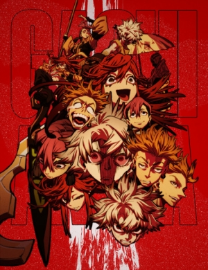
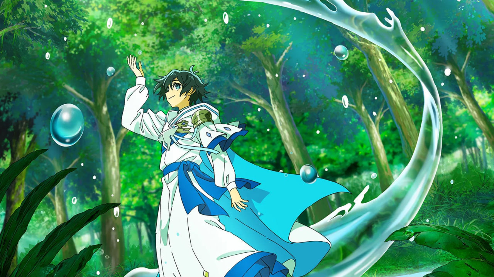

Top Anime
01

Dan da Dan
Reeling from her recent breakup, Momo Ayase, a popular high schooler, shows kindness to her socially awkward
schoolmate, Ken Takakura, by standing up to his bullies. Ken misunderstands her intentions, believing he has made a new friend who
shares his obsession wi....see more
02

Lord of Mysteries
In a Victorian world of steam, dreadnoughts, and occult horrors, Zhou Mingrui awakens as Klein Moretti. He walks
a razor's edge between light and darkness, entangled with warring Churches. This is the legend of unlimited potential...and unspeakable
danger....see more
03

Tougen Anki
Individuals with Momotarou and Oni blood coursing through their veins maintain a longstanding rivalry. The Oni are
careless, rash, and disorderly, while the Momotarou protect the human world from the uncontrollable Oni. Shiki Ichinose is a reckless
and irresponsi....see more
04

Gachiakuta
Living in the slums of a wealthy town, Rudo and his foster father Regto try to coexist with the rest of the town's
residents, but Rudo despises the wastefulness of the upper class. Ignoring the warnings from those around him, Rudo regularly rummages
through the t....see more
05

The Water Magician
Ryou is delighted to be reincarnated into the fantastical world of Phi, where he thinks he'll get to live a quiet
life learning to use his newfound water magic. Going with the flow here, however, means something very different. Ryou is immediately
pitted against....see more
06

Chainsaw Man
Denji is robbed of a normal teenage life, left with nothing but his deadbeat father's overwhelming debt. His only
companion is his pet, the chainsaw devil Pochita, with whom he slays devils for money that inevitably ends up in the yakuza's pockets.
All Denji can ....see more
07

One Piece
Gold Roger was known as the "Pirate King," the strongest and most infamous being to have sailed the Grand
Line. The capture and execution of Roger by the World Government brought a change throughout the world. His last words before his
death revealed the existence of the greatest treasure in the world....see more
08

Naruto: Shippuden
It has been two and a half years since Naruto Uzumaki left Konohagakure, the Hidden Leaf Village, for intense
training following events which fueled his desire to be stronger. Now Akatsuki, the mysterious organization of elite rogue ninja, is
closing in on their....see more
09

New Saga
After a fierce battle, Magic swordsman Kyle finally killed the Demon Lord after being seriously injured in the
battle. Kyle on the verge of death approaches a relic which was in possession of the Demon Lord and it sends him to the past. After
recovering from the....see more
10

Clevatess
Alicia, who had dreamed of becoming a hero since childhood, is chosen by the king as one of the thirteen heroes.
Armed with a legendary sword, the heroes set out to defeat the Demon King Clevatess. However, their recklessness triggers a terrible
crisis that could.....see more